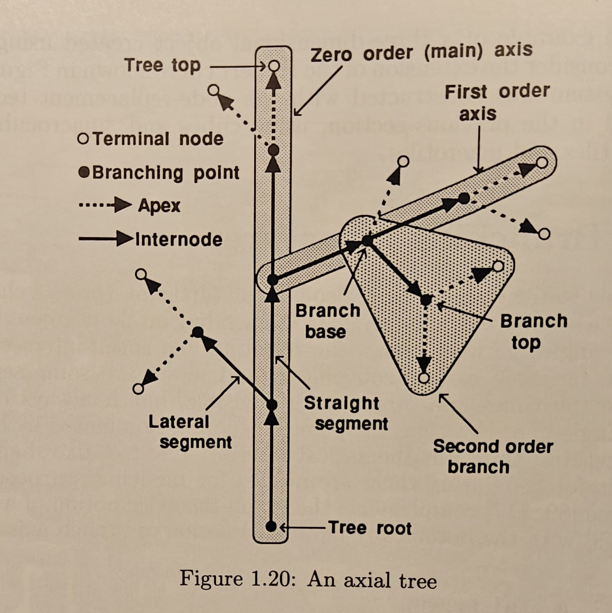
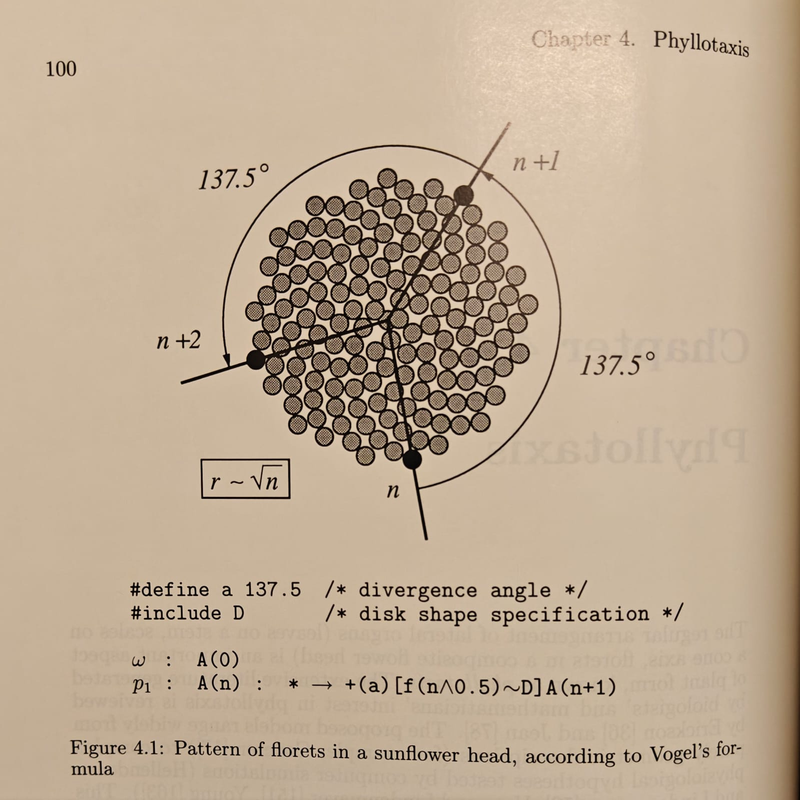
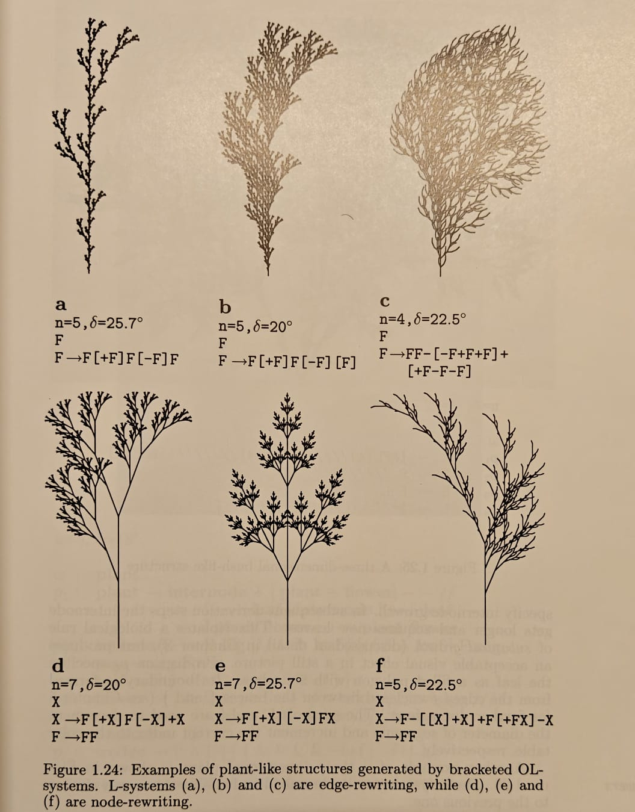

I am primarily interested in pure mathematics, although the characterization feels misunderstood. I was first introduced to recreational mathematics when I received a copy of the book Mathematics can be fun by Yakov Perelman as a takeaway gift after attending Science Day at IMSc on 27 February 2011. The recreational aspect was obvious at the outset, and for a short while this was my only source of mathematical nourishment alongside the school work and the occasional puzzle. I was however fortunate enough to be in the company of mathematically inclined peers - one in particular who later introduced me to the infinitude of primes, sequences, series, and fractals.

On 29 July 2013, I attended another Science Day, this time at CMI. This was a lecture program on a variety of topics. The day began with a talk on straightedge-and-compass constructions and ended with some physics demonstrations, although my vague memory of this is being mesmerized by a wobbly smoke ring that gently travelled twenty feet before diffusing into the air. A lecture I vividly remember was called A glimpse into infinity. This was the first time I encountered the notion of different infinities, by way of showing that the reals cannot be placed in bijection with the naturals.
Books
The following are some books that heavily influenced me early in my mathematical journey.
- Prime Obsession - John Derbyshyre
- The Music of the Primes - Marcus du Sautoy
- Mathematical Circles (Russian Experience) - Dmitri Fomin, Sergey Genkin, Ilia Itenberg
- Complex Numbers in Geometry - I. M. Yaglom
- Ordinary Differential Equations - V. I. Arnold
- Thirty-Three Miniatures: Mathematical and Algorithmic Applications of Linear Algebra - Jiri Matousek
- The Algorithmic Beauty of Plants - Przemyslaw Prusinkiewicz



More Books
I am an avid consumer of rare pieces of scientific literature, especially technical books. Most books in my collection are mathematics textbooks and collected works obtained from around the world, having survived decades in the care of many readers before me. Some arrive in conditions that require special attention. I restore these books to the best of my abilities and take them into my care. The most precious of these to me is a collection of books produced in the former Soviet Union by Mir Publishers Moscow and Nauka. While Mir is somewhat known in academia even these days, Nauka was the official publication house of the USSR Academy of Sciences and predates Mir by over two centuries. Many of the books by Mir are translated versions of older literature originally produced by Nauka. The Russian first edition prints of such books are generally much harder to obtain outside of Russia.
I did however stumble upon a connection that made it possible to obtain some copies.
In the 60's and 70's, these were sold in India at affordable prices and had made their way into the prescribed material in various curricula. They have since fallen out of favour over recent decades. My goal is to preserve as many of these as I can and highlight the beauty of these books, as I find them to be tastefully written. Many of these have served me well in my academic journey.